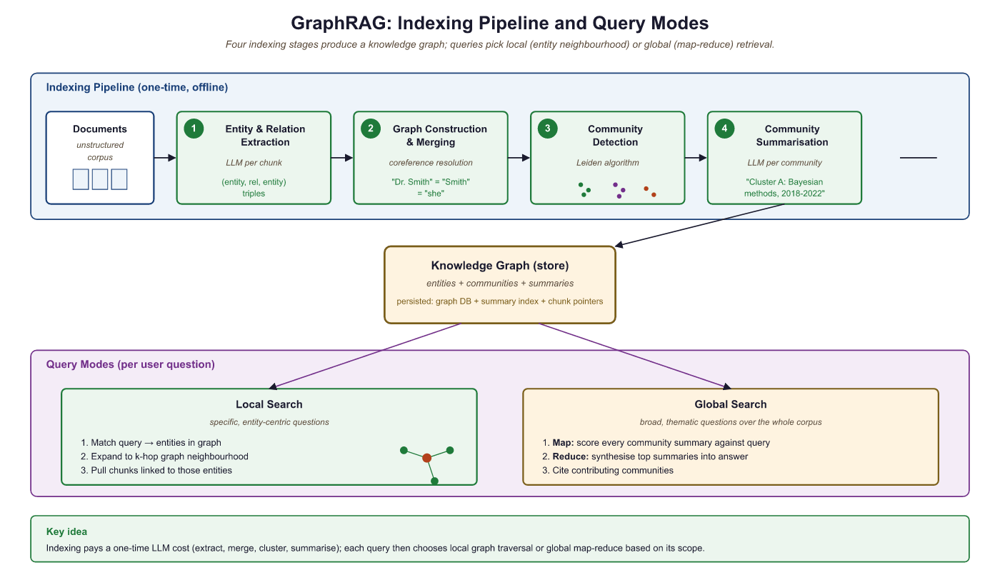

A single fact is a lonely thing. Connect it to other facts and you have understanding. Connect enough facts and you have wisdom.
RAG, Fact-Hoarding AI Agent
This section is about one specific technique: GraphRAG, the community-summarization-over-knowledge-graph approach that Microsoft Research published in 2024. The generic knowledge-graph substrate it sits on (triples, property graphs, Cypher-based retrieval, hybrid KG + vector) is the territory of Section 35.2; this section assumes that material and focuses on what GraphRAG adds: a four-stage indexing pipeline that detects entity communities with the Leiden algorithm, generates LLM summaries of those communities, and supports both local (entity-centric) and global (theme-level) queries via a router. We cover the original pipeline, the LazyGraphRAG and DRIFT variants, the build-time cost trade-offs, when to actually use it versus simpler KG + vector hybrid retrieval, and the evaluation metrics (comprehensiveness, diversity, empowerment) that the GraphRAG papers introduced.
Prerequisites
This section builds on the knowledge graph fundamentals introduced in Section 35.2, including triples, property graphs, and graph embeddings. Familiarity with the advanced RAG techniques from Section 35.1 (re-ranking, fusion retrieval) will help you understand how graph traversal complements vector search. You should also be comfortable with LLM API calls for the entity extraction examples.
Standard vector retrieval maps queries and documents into embedding space and returns the top-$k$ most similar chunks. This works well for single-hop factual questions where the answer lives in one passage. However, three classes of queries expose its limitations:
- Multi-hop reasoning: "Which drugs that inhibit CYP3A4 are also contraindicated with warfarin?" requires chaining facts across multiple documents. Vector search retrieves passages about CYP3A4 inhibitors or warfarin individually, but cannot join the results through shared entities.
- Global queries: "What are the main research themes in this corpus?" requires synthesizing information from thousands of documents. No single chunk contains the answer, so top-$k$ retrieval returns an arbitrary, incomplete subset.
- Entity disambiguation: A query about "Jordan" could refer to the country, the basketball player, or the river. Vector similarity conflates these, while a knowledge graph maintains distinct entity nodes with typed relationships.
These failure modes motivate GraphRAG: build a knowledge graph from your documents, then run graph algorithms (community detection, traversal) to answer queries that vector search cannot.
35.3.2 The Microsoft GraphRAG Pipeline
GraphRAG's indexing pipeline is expensive: it makes one LLM call per text chunk for entity extraction, plus additional calls for community summarization. For a corpus of 10,000 chunks, expect $50 to $200 in API costs and several hours of processing. Budget accordingly and start with a small test corpus (100 to 500 chunks) to validate the approach before scaling up.
graphrag pip-installable package"Microsoft GraphRAG" is not just a paper; it is a pip-installable Python package, graphrag (Microsoft, 2024), that bundles the entity-extraction, community-detection, and summarization stages plus a CLI for end-to-end indexing and query. The hand-rolled walk-through below is for understanding; in production, use the package and override only the configuration knobs (LLM provider, chunk size, community-summary prompt) you actually need. The same package supports the LazyGraphRAG (deferred summarization) and DRIFT (dynamic retrieval and refinement) variants via config flags, so you do not need separate libraries to experiment with them.
pip install graphrag
# 1. Initialize a project skeleton (creates ./settings.yaml and ./prompts/).
python -m graphrag init --root ./ragtest
# 2. Drop .txt files into ./ragtest/input/, then build the index:
python -m graphrag index --root ./ragtest
# 3. Query in either mode:
python -m graphrag query --root ./ragtest --method global \
--query "What are the main themes in this corpus?"
python -m graphrag query --root ./ragtest --method local \
--query "How is Einstein connected to Bohr?"Microsoft's GraphRAG (Edge et al., 2024) introduced a four-stage pipeline that transforms an unstructured corpus into a queryable knowledge graph with hierarchical community summaries. The pipeline proceeds as follows:
- Entity and relation extraction: An LLM processes each text chunk to extract entities (persons, organizations, concepts) and the relationships between them, producing triples like
(Einstein, developed, General Relativity). - Graph construction and merging: Extracted entities undergo coreference resolution (merging "Einstein" and "Albert Einstein" into a single node) and are assembled into a unified knowledge graph.
- Community detection: The Leiden algorithm partitions the graph into communities of densely connected entities at multiple hierarchical levels.
- Community summarization: An LLM generates a natural language summary for each community, capturing the key themes, entities, and relationships within that cluster.
At query time, GraphRAG supports two search modes. Local search starts from entities mentioned in the query, retrieves their graph neighborhood and associated text chunks, and generates an answer grounded in that local context. Global search distributes the query across all community summaries using a map-reduce pattern: each summary is scored for relevance, the most relevant summaries are aggregated, and the LLM synthesizes a final answer from the combined context.
Concretely, suppose you have indexed 5,000 medical research papers about diabetes. A local query like "what drugs interact with metformin?" identifies the Metformin node, walks one or two hops along interacts_with edges, collects the connected nodes (Warfarin, Cimetidine, Furosemide) and the supporting text chunks, and asks the LLM "given this neighborhood, what interacts with metformin?". A global query like "what are the major themes in this corpus?" cannot be answered from any single node's neighborhood, so it instead asks "do you see this theme?" against each of the 52 community summaries in parallel, ranks the summaries that responded affirmatively, and asks the LLM to synthesize across them. Local search uses graph traversal; global search uses map-reduce over precomputed community summaries.

feeding into a knowledge graph that supports both local search (entity neighborhood) and global search (map-reduce over community summaries)35.3.2.1 Running the Microsoft GraphRAG Pipeline
This snippet runs the Microsoft GraphRAG indexing and query pipeline on a local document corpus.
import os
import graphrag
from graphrag.config import GraphRagConfig
from graphrag.index import run_pipeline
# Configure the pipeline
config = GraphRagConfig(
root_dir="./ragtest",
input_dir="./ragtest/input",
llm={
"type": "openai_chat",
"model": "gpt-4o",
"api_key": os.environ["OPENAI_API_KEY"],
},
embeddings={
"llm": {
"type": "openai_embedding",
"model": "text-embedding-3-small",
}
},
chunks={"size": 1200, "overlap": 100},
entity_extraction={
"max_gleanings": 1, # additional extraction passes
"prompt": None, # use default extraction prompt
},
community_reports={
"max_length": 2000, # max tokens per community summary
},
claim_extraction={"enabled": False},
)
# Run the full indexing pipeline
# This extracts entities, builds the graph, runs Leiden
# community detection, and generates community summaries
import asyncio
result = asyncio.run(run_pipeline(config))
print(f"Indexed {result.entities} entities, "
f"{result.relationships} relationships, "
f"{result.communities} communities")from graphrag.query import LocalSearch, GlobalSearch
# Local search: entity-centric queries
local_search = LocalSearch(
config=config,
llm=config.llm,
context_builder_params={
"text_unit_prop": 0.5, # weight for text chunks
"community_prop": 0.1, # weight for community info
"conversation_history_prop": 0.1,
"top_k_entities": 10,
"top_k_relationships": 10,
}
)
local_result = await local_search.asearch(
"What side effects does metformin cause?"
)
print(local_result.response)
print(f"Sources: {len(local_result.context_data['sources'])}")
# Global search: corpus-level thematic queries
global_search = GlobalSearch(
config=config,
llm=config.llm,
map_reduce_params={
"map_max_tokens": 1000,
"reduce_max_tokens": 2000,
}
)
global_result = await global_search.asearch(
"What are the major drug safety concerns across all reports?"
)
print(global_result.response)GraphRAG's global search is its most distinctive capability. Traditional RAG systems, including those with knowledge graphs, answer questions by retrieving relevant fragments. GraphRAG's community summaries pre-compute corpus-level understanding at index time, making it possible to answer "What are the main themes?" without retrieving every document. The trade-off is indexing cost: because every chunk requires LLM calls for entity extraction and every community requires a summary, indexing a 10,000-document corpus can cost $50 to $500 in API fees. This is a one-time investment that unlocks query capabilities impossible with vector-only approaches.
Microsoft Research published GraphRAG in 2024 and shipped the graphrag Python package the same year; it powers themed-search features inside several Microsoft 365 and Azure AI Search customer pilots. The most cited deployment is for analyzing intelligence-style document collections (e.g., investigations or threat-hunting corpora), where queries like "what are the recurring tactics across these reports?" are corpus-level and unanswerable by vector RAG. Neo4j's GraphRAG offering (2024-2025) and LlamaIndex's GraphRAGExtractor module are interoperable implementations of the same pattern, and Lettria, Glean, and Hebbia have built commercial enterprise-search products on this architecture.
35.3.3 What Makes GraphRAG Different From Generic KG-RAG
The generic KG-grounded retrieval substrate (property graph storage, LLM-extracted triples, Cypher path queries, hybrid graph + vector retrieval) is the territory of Section 35.2. GraphRAG is what you get when you bolt three additional layers on top of that substrate. First, community detection with the Leiden algorithm partitions the graph into nested clusters of densely-connected entities. Second, LLM-generated community summaries precompute a natural-language description of each cluster's central entities, relationships, and themes. Third, the local / global query router decides whether to fan a query out to entity neighborhoods (local) or to map-reduce it across community summaries (global). The community-summary step is the load-bearing one: it is what makes corpus-level "what are the main themes?" queries tractable at serving time, because the expensive thematic synthesis happened at indexing time.
The Leiden algorithm used by GraphRAG for community detection was developed at Leiden University and published in 2019 as a fix for the Louvain algorithm. The key improvement is that Leiden guarantees connected communities; Louvain could produce communities whose nodes did not actually form a connected subgraph. For GraphRAG this matters because a disconnected "community" would mix unrelated entity groups into a single summary and produce incoherent global-search results.
35.3.3.1 Community Summaries as Pre-Computed Themes
For each community at each level of the Leiden hierarchy, GraphRAG asks an LLM to produce a 1 to 2 page summary describing the entities, relationships, and themes in that community. These summaries are GraphRAG's distinctive artifact. At query time, a global search over "what are the main safety themes across all clinical trial reports?" runs map-reduce: each community summary is scored for relevance, the top-k are concatenated, and the LLM produces a final synthesized answer. None of this is possible with generic KG retrieval alone, because the structured graph holds entities and edges but not theme-level prose.
35.3.3.2 Quality Bottleneck: Coreference and Extraction
GraphRAG's quality is dominated by the quality of the underlying graph, which means by the quality of entity extraction and coreference resolution. Both topics are covered for general KG construction in Section 35.2; the GraphRAG-specific multiplier is that community detection assumes "one entity = one node". Duplicated entities (Apple Inc. vs Apple vs AAPL) silently split a real community into multiple smaller ones, which produces multiple narrow summaries instead of one cohesive theme. Empirically, a graph with 20% entity duplication produces global-search results that score worse than naive RAG because the community summaries are themselves fragmented. Schema-guided extraction, multi-pass gleaning, and an embedding + LLM coreference pass (also discussed in 35.2) are the standard fixes.
35.3.6 Evaluation: Faithfulness and Completeness
Evaluating GraphRAG requires metrics that capture both the faithfulness of generated answers (are claims supported by retrieved evidence?) and the completeness of retrieval (did the system find all relevant information?). The original GraphRAG paper evaluates on query-focused summarization (QFS) tasks, where the goal is to produce comprehensive summaries that address a specific question across an entire corpus.
35.3.6.1 Evaluation Metrics
| Metric | What It Measures | How to Compute |
|---|---|---|
| Comprehensiveness | Does the answer cover all relevant aspects? | LLM-as-judge pairwise comparison against baseline |
| Diversity | Does the answer surface varied perspectives? | LLM-as-judge scoring for range of topics covered |
| Empowerment | Does the answer help the user understand and act? | LLM-as-judge scoring for actionability |
| Faithfulness | Are all claims supported by retrieved context? | RAGAS faithfulness metric (Section 34.1) |
| Context relevance | Is the retrieved context pertinent to the query? | Proportion of retrieved content used in the answer |
35.3.6.2 Benchmarking Datasets
Microsoft released the graphrag-benchmarking-datasets collection, which provides
standardized corpora for evaluating GraphRAG systems. These datasets include pre-annotated entities,
communities, and reference summaries. The AP News and Podcast Transcripts
datasets are commonly used for benchmarking, with queries spanning both local factual questions and
global thematic questions.
import json
from openai import OpenAI
client = OpenAI()
def evaluate_comprehensiveness(query, answer_a, answer_b):
"""Pairwise LLM-as-judge evaluation for comprehensiveness."""
prompt = f"""You are evaluating two answers to the following question.
Question: {query}
Answer A:
{answer_a}
Answer B:
{answer_b}
Which answer is more comprehensive? Consider:
1. Coverage of all relevant aspects of the question
2. Depth of detail for each aspect
3. Inclusion of supporting evidence
Respond with a JSON object:
{{"winner": "A" or "B" or "tie",
"explanation": "brief reasoning",
"score_a": 1-5,
"score_b": 1-5}}"""
response = client.chat.completions.create(
model="gpt-4o",
messages=[{"role": "user", "content": prompt}],
response_format={"type": "json_object"},
)
return json.loads(response.choices[0].message.content)
# Compare GraphRAG global search vs. naive RAG
graphrag_answer = global_result.response
naive_rag_answer = naive_rag_pipeline.query(query)
eval_result = evaluate_comprehensiveness(
query="What are the major drug safety themes?",
answer_a=graphrag_answer,
answer_b=naive_rag_answer,
)
print(f"Winner: {eval_result['winner']}")
print(f"GraphRAG: {eval_result['score_a']}/5, "
f"Naive RAG: {eval_result['score_b']}/5")Who: An NLP engineer at a law firm building a research assistant for 50,000 case documents.
Situation: Attorneys needed to answer questions spanning multiple cases, such as "What precedents have courts cited when overturning non-compete agreements in the technology sector?"
Problem: Vector-only RAG retrieved individual case excerpts but could not follow citation chains or synthesize patterns across cases. Attorneys still had to manually trace precedent relationships.
Dilemma: Full GraphRAG indexing of 50,000 documents would cost approximately $2,000 in LLM API calls and take 48 hours. The team debated whether the investment was justified compared to improving their vector RAG pipeline.
Decision: They ran a pilot on 5,000 documents from the non-compete domain, using Neo4j for graph storage and Microsoft GraphRAG for community detection. The pilot cost $200 and took 6 hours.
How: Entity types included Case, Judge, Statute, Legal Principle, and Company. Relationship types included CITES, OVERTURNS, APPLIES, and DISTINGUISHES. Hybrid retrieval used graph traversal for citation chain queries and vector search for topical questions.
Result: Multi-hop citation queries improved from 35% accuracy (vector RAG) to 82% accuracy (GraphRAG). Global queries like "What trends are emerging in non-compete enforcement?" produced comprehensive summaries that previously required days of manual research.
Lesson: GraphRAG's value scales with the relational complexity of the domain. Legal, biomedical, and financial corpora with dense entity relationships benefit most from graph-augmented retrieval.
Temporal GraphRAG systems are extending knowledge graphs with time-stamped relationships, enabling queries like "How has the treatment landscape for diabetes changed since 2020?" by filtering graph edges by temporal validity. LazyGraphRAG (Microsoft, 2024) reduces indexing costs by deferring community summarization to query time, using a best-first search over the graph that generates summaries on demand. Multi-modal GraphRAG extends entity extraction to images, tables, and diagrams, building graphs that span modalities. Research into incremental graph updates addresses the challenge of adding new documents without reindexing the entire corpus, which is critical for production systems where data arrives continuously.
The DRIFT search method adds a follow-up question mechanism to local search, expanding the retrieved context by generating and answering decomposed sub-questions.
- Vector retrieval has structural blind spots: Multi-hop reasoning, global queries, and entity disambiguation require structured knowledge representations that embedding similarity cannot provide.
- Microsoft GraphRAG enables corpus-level queries: The four-stage pipeline (extract, build, detect communities, summarize) pre-computes thematic understanding that powers global search through map-reduce over community summaries.
- Neo4j GraphRAG provides production graph infrastructure: Property graphs with Cypher queries enable precise, multi-hop retrieval with filtering and aggregation capabilities beyond what embedding search offers.
- Graph construction quality determines system quality: Schema-guided extraction, multi-pass gleaning, and robust coreference resolution are essential for building knowledge graphs that support accurate retrieval.
- Hybrid retrieval combines the best of all modalities: Production systems should fuse graph traversal, vector similarity, and full-text search to handle the full range of query types.
- Evaluation requires task-specific metrics: Comprehensiveness and diversity metrics, evaluated via LLM-as-judge pairwise comparisons, capture GraphRAG's advantages on global queries that traditional metrics miss.
Show Answer
Show Answer
Show Answer
Show Answer
Exercises
Vector retrieval excels at "find the chunk that talks about X" but fails on questions like "Which of company A's competitors acquired a startup founded by an ex-employee of company B?" (a) Why does dense embedding retrieval struggle with this query class? (b) What does GraphRAG add that closes the gap? (c) Why doesn't simply retrieving more chunks help?
Answer Sketch
(a) The query asks about a 4-hop relational path (A -> competitors -> acquisitions -> founders -> employee history -> B). No single chunk in the corpus contains all 4 hops, so embedding similarity returns chunks about the entities individually but not the connection. (b) GraphRAG indexes entities and their relations explicitly. The retrieval step traverses graph paths to assemble the relational answer rather than approximating it through chunk similarity. The LLM then composes a coherent answer from the edges. (c) Retrieving more chunks just dilutes the context with more disconnected facts; the model still has to find the path itself, which it does poorly even with chain-of-thought. The data structure mismatch can't be fixed by scaling the wrong index.
You want to GraphRAG-index a 1M-document corpus. Predict: (a) the dominant cost of the build phase; (b) how that cost scales with corpus size; (c) what is most expensive at query time relative to vanilla RAG?
Answer Sketch
(a) The dominant cost is LLM inference for entity and relation extraction: each chunk needs at least one LLM pass to extract a (subject, relation, object) graph. For 1M docs averaging 5 chunks each, that's 5M LLM calls; at $0.001/call (small model) the build alone is ~$5K and 10-50 GPU-hours. (b) Roughly linearly with chunk count, which means roughly linearly with corpus size. The graph itself adds storage proportional to entity density (typically 5-20 entities/chunk). (c) Query time: GraphRAG runs hybrid retrieval (vector + graph traversal + community summary) plus an LLM-based reranking, so per-query LLM cost is 2-5x vanilla RAG. The win comes when the corpus has dense relational structure; for a flat document store it's overkill.
Sketch a 12-line Python function hybrid_retrieve(query, k=10) that combines (a) vector search top-20, (b) graph 1-hop neighborhood of detected entities, (c) full-text BM25 top-10, then returns the top-k after reciprocal rank fusion. Note one parameter you must tune for your corpus.
Answer Sketch
from collections import defaultdict
def hybrid_retrieve(query, k=10):
vec_hits = vector_index.search(embed(query), 20)
entities = ner(query)
graph_hits = []
for e in entities:
graph_hits += graph.one_hop_neighbors(e)
bm25_hits = bm25_index.search(query, 10)
scores = defaultdict(float)
for hits in (vec_hits, graph_hits, bm25_hits):
for r, h in enumerate(hits): scores[h.id] += 1 / (60 + r)
return sorted(scores, key=scores.get, reverse=True)[:k]
The parameter to tune: the RRF constant (60 is the canonical value but corpus-dependent), and the per-source result counts. On a relation-heavy corpus, weight graph hits more; on free text, weight BM25 more. Tune via offline ablation on a labeled query set.
Three months after deploying GraphRAG you discover that 30% of the entities in your graph are duplicates ("Apple Inc." vs "Apple" vs "AAPL") and the answer quality is worse than your old vector RAG. Diagnose: (a) why duplicates hurt graph retrieval especially badly; (b) what step you skipped at build time; (c) how to remediate without rebuilding the graph from scratch.
Answer Sketch
(a) Graph traversal depends on the assumption that "the same entity = the same node"; with duplicates, a 1-hop query about "Apple Inc." misses every relation that was extracted under "Apple", silently halving your recall on multi-hop questions. (b) The missed step is entity resolution / canonicalization: a clustering pass over surface forms (using string similarity + an embedding model + an LLM judge for ambiguous cases) that merges variants under a canonical ID. (c) Without rebuilding: run an offline canonicalization pass that produces an alias table, then merge nodes in-place via Cypher MERGE statements (Neo4j) or equivalent. Re-extract relations only for the merged subset. The general principle: knowledge-graph quality is dominated by entity resolution; skip it and the graph is not actually a graph.
What Comes Next
This section completes the RAG chapter's coverage of knowledge graph-augmented retrieval. For evaluation of RAG systems including GraphRAG, see Section 35.4: RAG Ingestion Pipelines and Connectors. For agentic patterns that can orchestrate GraphRAG queries as part of multi-step research workflows, see Section 32.2: Deep Research & Agentic RAG.